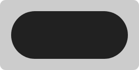

Shapes
A Shape defines the appearance of a ShapeComponent. Most of the predefined Shape implementations are accessible via the Shapes object.
Rectangle
This is the simplest kind of Shape. It displays a rectangle with sharp edges.
Pill
A pill is a rectangle with all corners fully rounded.

Rounded-corner shape
This shape type displays a rectangle with its corners rounded by the specified radii. Examples:
-
a shared corner radius
-
different corner radii for each corner
Cut-corner shape
Displays a rectangle with its corners cut by the specified sizes. Examples:
-
a common cut size
-
different cut sizes for each corner
Drawable shape
Drawables can be converted to Shapes. The built-in converter function can:
-
keep the
Drawable’s aspect ratio to prevent it from being stretched, -
apply a tint equal to the parent
ShapeComponent’s color, and -
use another
Shapeto fill in the remaining space if theDrawablecan’t fill all of the available space.
Examples:
-
with
keepAspectRatioandotherShape -
without
keepAspectRatio
Dashed shape
DashedShape draws a dashed line along a path by interchangeably drawing a provided shape and leaving a gap. It is used for the default axis guidelines, among other things. For all available parameters, see the documentation.